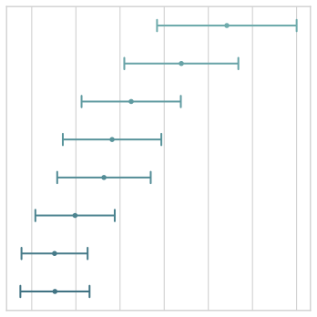

User guide and tutorial# An introduction to seaborn A high-level API for statistical graphics Multivariate views on complex datasets Opinionated defaults and flexible customization API Overview# Overview of seaborn plotting functions Similar functions for similar tasks Figure-level vs. axes-level functions Combining multiple views on the data Data structures accepted by seaborn Long-form vs. wide-form data Options for visualizing long-form data Options for visualizing wide-form data Objects interface# The seaborn.objects interface Specifying a plot and mapping data Transforming data before plotting Building and displaying the plot Customizing the appearance Properties of Mark objects Coordinate properties Color properties Style properties Size properties Other properties Plotting functions# Visualizing statistical relationships Relating variables with scatter plots Emphasizing continuity with line plots Showing multiple relationships with facets Visualizing distributions of data Plotting univariate histograms Kernel density estimation Empirical cumulative distributions Visualizing bivariate distributions Distribution visualization in other settings Visualizing categorical data Categorical scatterplots Comparing distributions Estimating central tendency Showing additional dimensions Statistical operations#  Statistical estimation and error bars Measures of data spread Measures of estimate uncertainty Error bars on regression fits Are error bars enough? Estimating regression fits Functions for drawing linear regression models Fitting different kinds of models Conditioning on other variables Plotting a regression in other contexts Multi-plot grids# Building structured multi-plot grids Conditional small multiples Using custom functions Plotting pairwise data relationships Figure aesthetics# Controlling figure aesthetics Seaborn figure styles Removing axes spines Temporarily setting figure style Overriding elements of the seaborn styles Scaling plot elements Choosing color palettes General principles for using color in plots Tools for choosing color palettes Qualitative color palettes Sequential color palettes Diverging color palettes